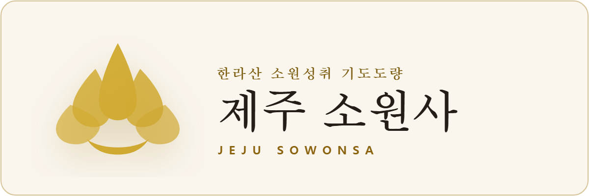

웹사이트, 팜플렛, 현수막, 공문서, 명함 등 사찰 공식 홍보 및 전산에 사용하는 정품 로고 파일(고화질 PNG / 벡터 SVG)입니다.
처염상정의 청정함과 소원성취를 상징하는 단독 대표 심볼 마크입니다.
웹사이트 상단 헤더, 유튜브 배너, 어두운 배경의 책자 표지용 완성형 로고입니다.

공문서 서식, 편지 봉투, 흰색/베이지 팜플렛, 명함 인쇄에 최적화된 로고입니다.
• SVG 벡터 파일: 포토샵, 일러스트레이터, 피그마에서 무제한 확대해도 전혀 깨지지 않는 원본 그래픽 규격입니다. 대형 현수막이나 간판 제작 시 인쇄업체에 전달하시면 됩니다.
• PNG 고화질 파일: 1024px ~ 1200px 규격의 선명한 비트맵 이미지로, 한글 문서, PPT, 카카오톡 공지, 블로그 포스팅에 바로 삽입하실 수 있습니다.